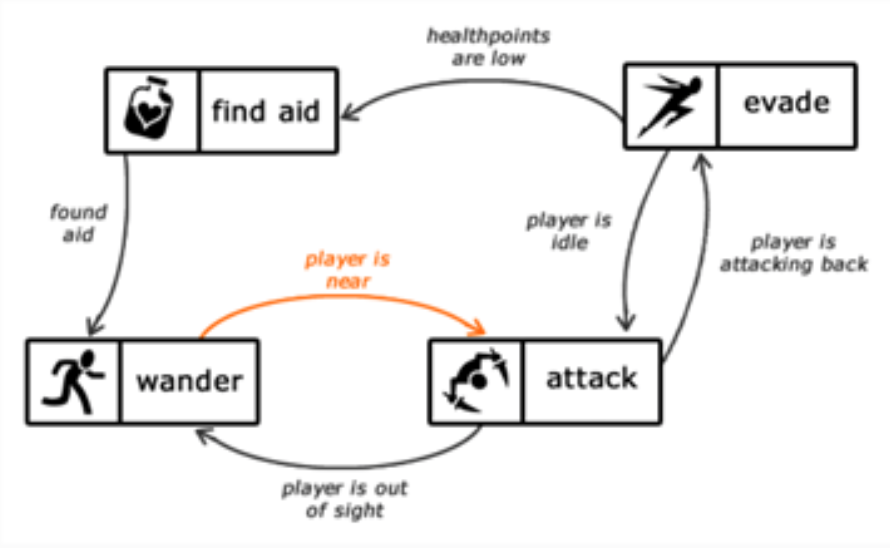

Project Idea
After much deliberation with the team, it was decided that we would pursue Kelvin’s idea of making a video game. It was originally proposed as a top-down shooter, which then further progressed to try and incorporate horror/thriller themes into the shooter. At the moment it is uncertain if the finished product would follow a top-down format or even a platformer more akin to the early days of Super Metroid.
Furthermore, depending on how things go, we may even forgo the shooting aspect altogether, as none of us are familiar with game making and AI behaviors. We may opt for an even simpler game, where you only need to navigate through a map while an unkillable enemy is chasing you. If it catches you, it does damage to you, and you only need to escape to the map exit to survive and move on to the next stage. This seems like another interesting way of making a horror game; think of a much less complex of Amnesia: The Dark Descent, where you aren’t an unstoppable badass, rather just an everyman trying to survive.
The reason that we believe a video game would be a fun exercise to undertake is due to the seemingly simplistic nature that games tend to have. However, if you delve deeper into the inner workings of video games, there are many layers of coding and scripting required to make a successful game. Map design, map layout, objectives, items, interactions etc. There are a tremendous number of cogs working in conjunction to create a game.
We seem to share a common interest in AI and machine learning so perhaps designing the enemy units in a game will help better our understanding of such systems.
When discussing any enemy AI it is hard to overlook F.E.A.R. (2005), often touted as the pinnacle of enemy AI for its time and even withstanding the test of time more than 15 years later. Most AI units in gaming are Finite State Machines (FSMs). Simply put, a sequence of commands and operations that will activate given the correct circumstances. However, only one state of the FSM can be active at any given time, so the machine must re-evaluate its situation to be able to flow from one state to another.
Here we see a simple form of enemy AI in a game.

Within given parameters and circumstances, the enemy AI would simply follow the logic tree. FSMs are useful in planning out unit behavior as they are very easily represented through visual aids such as graphs. Our only hope is that we do not create an unfair game as we each find the creation of the AI to be extremely exciting.
Regarding hunkering down to create the game, there are several finalist programs that we have decided on. Unity and Unreal, both boast the fact that they are tried and tested amongst the games industry, not to mention, absolutely free. Another alluring option is Construct 3, where you can publish directly to the web, HTML5 format, something that was also planned for our project. Finally, GameMaker Studios 2 was also an option for us, a common tool used by a lot of indie game developers. We will decide on what to use as the days go on.
Due to the simplistic nature of what we wish to accomplish in this game, a top-down game is theoretically the easiest form of game to make, as we would only need to limit movement on a 2D plane. A platformer needs to also implement gravity and platforming as well. It may make for an overall more aesthetically pleasing game, however, we have yet to fully delve into making a prototype for our game to test the feasibility and possibility of having the project come into fruition. Our only saving grace so far is the abundant reserves of tutorials and resources available for first time game makers. It was also due to our inexperience in making a game that we have limited our choices of game maker programs. Unity and Unreal, being in the industry for 15 years and over 20 years respectively, followed closely by GameMaker Studio 2 and Construct 3 who are favorites for the indie creator market.
It was also due to our inexperience in making a game that we have limited our choices of game maker programs. Unity and Unreal, being in the industry for 15 years and over 20 years respectively, followed closely by GameMaker Studio 2 and Construct 3 who are favorites for the indie creator market.